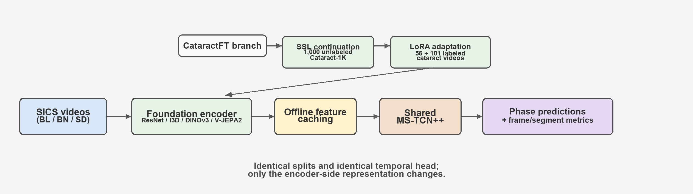
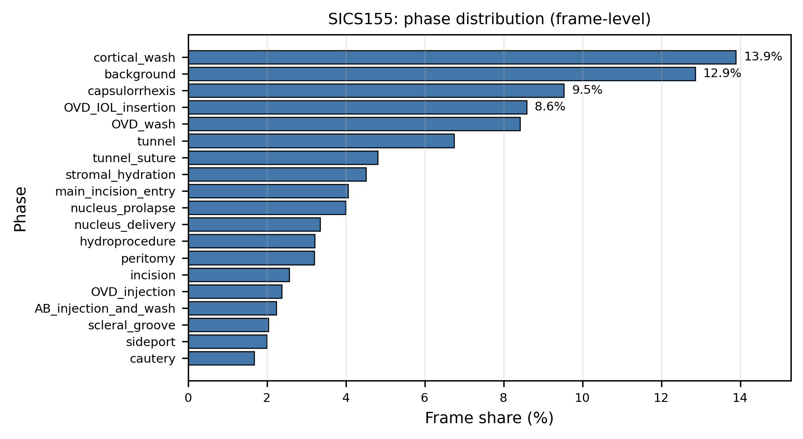
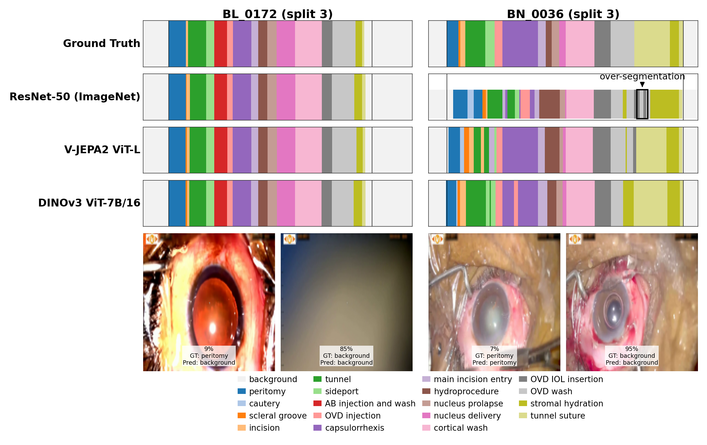
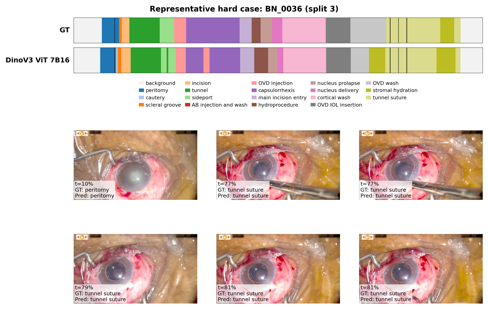
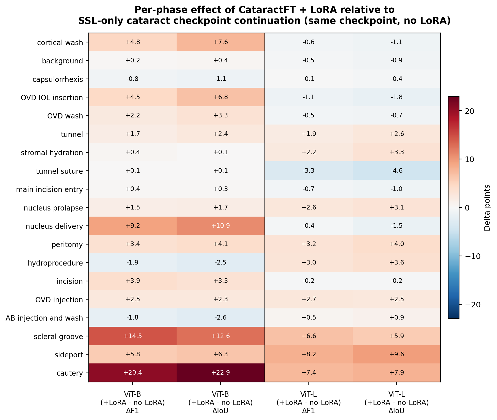

Controlled study pipeline. Encoders are frozen after optional cataract-domain SSL continuation and LoRA adaptation, features are cached once, and the same MS-TCN++ head is trained for all encoders.
Surgical phase segmentation is central to computer-assisted surgery, yet robust models remain difficult to develop when labeled surgical videos are scarce. We study data-efficient phase segmentation for manual small-incision cataract surgery (SICS) through a controlled comparison of visual representations.
To isolate representation quality, we pair each visual encoder with the same temporal model (MS-TCN++) under identical training and evaluation settings on SICS-155 (19 phases). We compare supervised encoders (ResNet-50, I3D) against large self-supervised foundation models (DINOv3, V-JEPA2), and use a cached-feature pipeline that decouples expensive visual encoding from lightweight temporal learning.
Foundation-model features improve segmentation performance in this setup, with DINOv3 ViT-7B achieving the best overall results (83.4% accuracy, 87.0 edit score). We further examine cataract-domain transfer using unlabeled videos and lightweight adaptation, and analyze when it helps or hurts. Overall, the study indicates strong transferability of modern vision foundation models to surgical workflow understanding and provides practical guidance for low-label medical video settings.
We evaluate on SICS-155, which contains 155 annotated manual small-incision cataract surgery procedures with frame-level labels over 19 phases. The dataset exhibits significant class imbalance: cautery accounts for only 1.7% of frames, while cortical wash occupies 13.8%. Short phases such as sideport and scleral groove have median contiguous durations of about 6.5 seconds.

SICS-155 phase distribution at frame level. The long-tail imbalance motivates representation learning approaches that remain robust under limited labels.
We adopt a deployment-oriented factorization: a large visual encoder produces frozen per-frame features, and a lightweight temporal model (MS-TCN++) maps cached features to phase labels. This decoupling enables controlled comparisons, reduces downstream training cost, and matches realistic deployment where expensive feature extraction is run once offline.
We compare two encoder groups:
We further study CataractFT, an exploratory cataract-domain transfer workflow combining self-supervised continuation on 1,000 unlabeled Cataract-1K videos and optional LoRA adaptation before frozen feature extraction on SICS-155.
| Encoder | Pretraining | Modality | Input | Feat Dim | Params |
|---|---|---|---|---|---|
| ResNet-50 | Supervised (ImageNet-1K) | 2D image | 224 | 2048 | 25.6M |
| I3D-R50 | Supervised (Kinetics-400) | 3D video | 224 | 2048 | 28.0M |
| DINOv3 ViT-B/16 | Self-supervised (LVD-1689M) | 2D image | 224 | 768 | 85.7M |
| DINOv3 ViT-L/16 | Self-supervised (LVD-1689M) | 2D image | 224 | 1024 | 300M |
| DINOv3 ViT-7B/16 | Self-supervised (LVD-1689M) | 2D image | 224 | 4096 | 6.716B |
| V-JEPA2 ViT-L | Self-supervised video (Meta) | 3D video | 256 | 1024 | 326.0M |
| V-JEPA2 ViT-g/16 | Self-supervised video (Meta) | 3D video | 384 | 1408 | 1.03B |
Self-supervised DINOv3 features outperform supervised encoders on average. DINOv3 ViT-7B achieves the best results across all metrics with 83.4% accuracy and 87.0 edit score. We observe a consistent within-family scaling trend for DINOv3 (ViT-B < ViT-L < ViT-7B).
| Model | Accuracy | Macro-F1 | Edit Score | PR-AUC | F1@10 | F1@25 | F1@50 | mIoU |
|---|---|---|---|---|---|---|---|---|
| ResNet-50 (ImageNet) | 75.7 ± 1.1 | 67.7 ± 1.4 | 79.3 ± 1.5 | 71.8 ± 1.2 | 79.8 ± 1.1 | 75.3 ± 2.0 | 62.2 ± 2.5 | 53.5 ± 1.6 |
| I3D | 79.8 ± 0.9 | 71.7 ± 1.4 | 82.6 ± 2.5 | 75.7 ± 1.1 | 83.2 ± 2.5 | 79.2 ± 3.2 | 68.9 ± 2.6 | 58.3 ± 1.8 |
| DINOv3 ViT-B/16 | 78.4 ± 0.7 | 71.2 ± 0.9 | 82.5 ± 1.7 | 75.0 ± 1.2 | 83.8 ± 1.1 | 79.9 ± 1.8 | 68.2 ± 2.0 | 57.0 ± 2.0 |
| DINOv3 ViT-L/16 | 82.2 ± 1.3 | 75.8 ± 2.1 | 85.7 ± 1.7 | 78.5 ± 1.3 | 87.2 ± 1.8 | 84.4 ± 2.5 | 73.7 ± 4.4 | 62.4 ± 3.6 |
| DINOv3 ViT-7B/16 | 83.4 ± 1.4 | 76.5 ± 2.0 | 87.0 ± 1.5 | 79.4 ± 1.7 | 88.0 ± 2.2 | 84.5 ± 2.6 | 75.0 ± 1.8 | 64.1 ± 3.2 |
| V-JEPA2 ViT-L | 77.9 ± 1.0 | 69.9 ± 0.5 | 83.2 ± 1.0 | 74.2 ± 0.6 | 83.0 ± 0.9 | 78.2 ± 1.5 | 66.6 ± 1.7 | 55.6 ± 2.3 |
| V-JEPA2 ViT-g | 76.0 ± 1.0 | 67.5 ± 1.2 | 81.2 ± 2.6 | 72.2 ± 0.7 | 80.6 ± 2.5 | 76.5 ± 2.2 | 63.8 ± 2.6 | 53.2 ± 2.1 |
5-Fold Cross Validation Results on SICS-155 (mean ± std, %). Best per metric is highlighted.

Qualitative phase segmentation results. For each video, rows show ground truth, the supervised baseline (ResNet-50), a foundation-model alternative (V-JEPA2 ViT-L), and the best-performing model (DINOv3 ViT-7B), all with the same temporal head.

Aligned keyframes with sampled timepoints and corresponding ground-truth/predicted phases.
We explore CataractFT: self-supervised continuation on 1,000 unlabeled Cataract-1K videos, optional LoRA fine-tuning on annotated cataract surgeries, and frozen feature extraction for the same SICS temporal head. Transfer results are mixed and backbone-dependent.
| Encoder | Acc (FT) | ΔAcc | ΔMacro-F1 | ΔEdit |
|---|---|---|---|---|
| DINOv3 ViT-B/16 | 81.27 | +2.86 | +2.87 | +1.66 |
| DINOv3 ViT-L/16 | 81.26 | −0.93 | −1.82 | −0.69 |
| V-JEPA2 ViT-L | 71.53 | −6.37 | −8.08 | −3.31 |
Preliminary CataractFT transfer to SICS-155. Deltas are relative to the corresponding base encoder.
| Encoder | Variant | Accuracy | Macro-F1 | Edit | PR-AUC | F1@50 | mIoU |
|---|---|---|---|---|---|---|---|
| DINOv3 ViT-B/16 | Base | 78.41 ± 0.71 | 71.23 ± 0.87 | 82.55 ± 1.71 | 75.04 ± 1.23 | 68.20 ± 1.96 | 57.01 ± 1.96 |
| SSL-only | 78.26 ± 1.86 | 70.45 ± 2.19 | 85.50 ± 1.61 | 74.74 ± 1.66 | 68.83 ± 3.47 | 57.31 ± 2.20 | |
| CataractFT + LoRA | 81.27 ± 1.84 | 74.10 ± 2.23 | 84.21 ± 2.58 | 77.03 ± 2.02 | 70.58 ± 3.02 | 61.46 ± 2.61 | |
| DINOv3 ViT-L/16 | Base | 82.19 ± 1.28 | 75.80 ± 2.07 | 85.71 ± 1.74 | 78.50 ± 1.31 | 73.74 ± 4.44 | 62.40 ± 3.61 |
| SSL-only | 80.80 ± 1.31 | 72.56 ± 1.33 | 86.82 ± 0.56 | 77.08 ± 0.84 | 70.74 ± 1.51 | 59.58 ± 3.20 | |
| CataractFT + LoRA | 81.26 ± 0.91 | 73.98 ± 1.02 | 85.02 ± 2.04 | 77.93 ± 0.96 | 71.84 ± 3.22 | 61.23 ± 2.55 |
CataractFT ablation: Base uses the encoder as a standard frozen extractor, SSL-only continues from the cataract-domain checkpoint without LoRA, and CataractFT + LoRA applies the full adaptation pipeline.

Per-phase change from CataractFT + LoRA relative to SSL-only continuation. Positive values indicate phases that benefit from LoRA adaptation; negative values indicate phases where the checkpoint-only variant remains better.
@article{spencer2025dataefficient,
author = {Spencer, Lincoln and Wang, Song and Chen, Chen},
title = {Data-Efficient Surgical Phase Segmentation in Small-Incision Cataract Surgery: A Controlled Study of Vision Foundation Models},
journal = {arXiv preprint arXiv:2604.10514},
year = {2025},
url = {https://arxiv.org/abs/2604.10514},
}